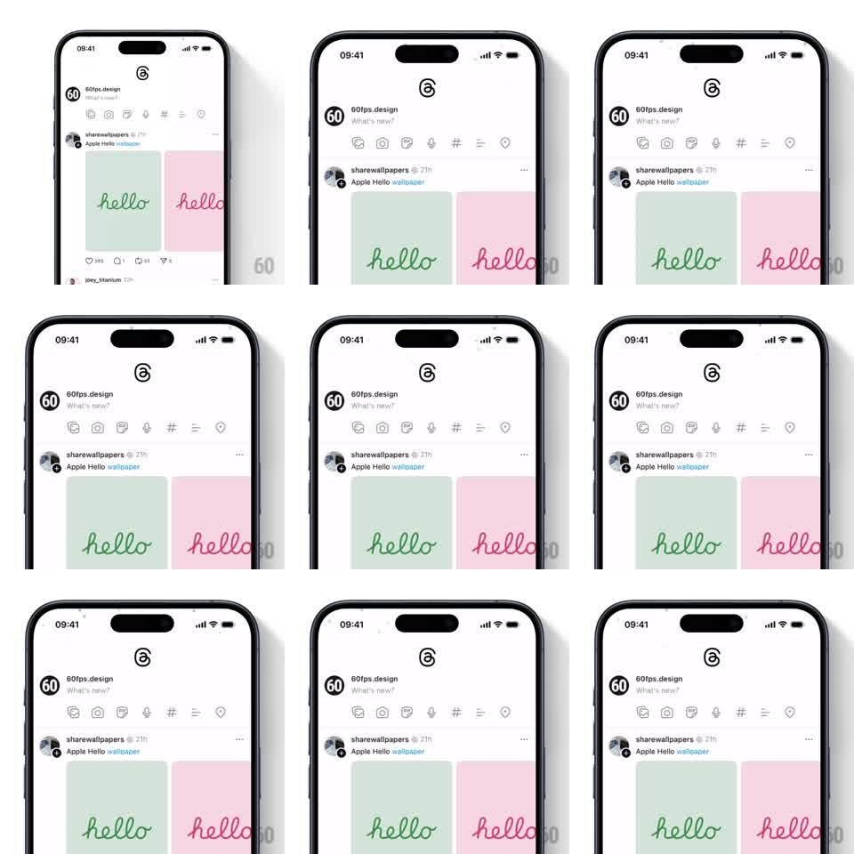

Media
Frame-by-frame

Rebuild this interaction 1:1: Threads' snow easter egg - snowflake particles drift down over the feed and slosh with device tilt, settling on posts and the tab bar like a snow globe.

Rebuild this interaction 1:1: Threads' snow easter egg - snowflake particles drift down over the feed and slosh with device tilt, settling on posts and the tab bar like a snow globe. ## Integration Integration: stack-agnostic spec - springs given as stiffness/damping, timed motions as duration + curve; map every value to your framework and animation library of choice. ## Scene The standard Threads app (logo header, composer row, feed of posts with images and text, tab bar) in light mode. A layer of small snowflake particles falls over the entire interface, accumulating lightly on horizontal surfaces. ## Motion spec Pattern: tilt-reactive particle snow, continuous. - Snowflakes spawn at the top at a steady rate (about 20 per second across widths) and fall at 30-80px/s, each with a gentle side sway (sine, 1-2s period, 5-15px amplitude). - Tilting the device shifts gravity for the particle system: flakes drift toward the tilt (up to 2x lateral speed at full tilt) and their sway follows the new fall direction. - Flakes that land on card tops, image edges, or the tab bar stick for 2-4s, fading out softly; flakes landing on the bottom edge pile briefly before melting. - Flake sizes vary (2-6px) with depth: smaller flakes fall slower and blur slightly. ## Calibration - The feed stays fully interactive underneath - snow is a pure overlay, never blocking touches. - Tilt response is immediate but smoothed (150ms smoothing) so it sloshes rather than jitters. ## Reduced motion Snow falls straight down at low density; no tilt response. ## Don't miss - Flakes render in front of all content including the nav bar - the whole app is inside the globe. - Accumulation is subtle: a dusting on edges, never drifts that cover content.